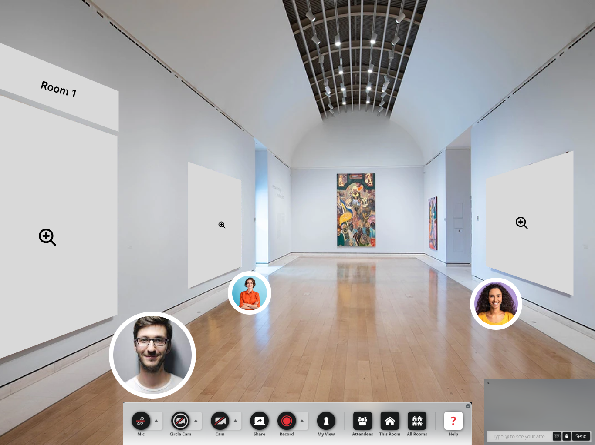
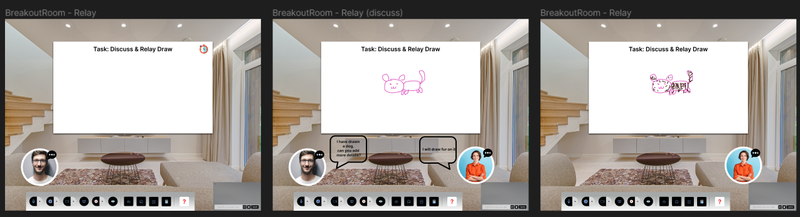
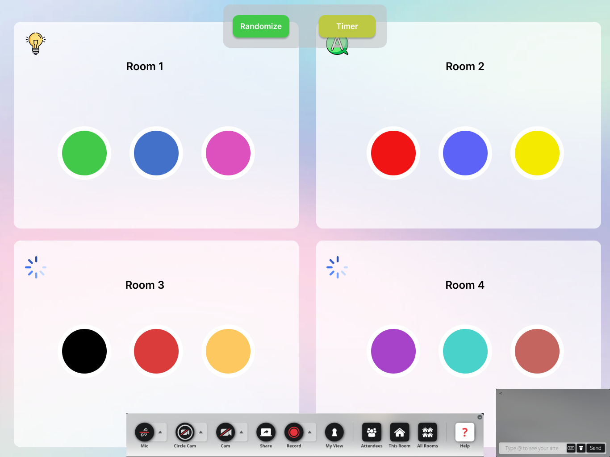

Prototype
In this section, we showcase our ideas with prototypes developed using Figma. Our prototypes
were rigorously evaluated through demo and feedback sessions. These were conducted to
assess the effectiveness of our concepts and validate the functionality of the proposed features
Meeting Platform Features
Internet Connectivity Indicator:
This visual feature monitors the internet strength of each participant in real-time, ensuring seamless communication during hybrid meetings. By alerting the facilitator of any connectivity issues, this feature prevents the unintentional exclusion of any participant due to unnoticed disconnections.

Hand Gesture Recognition:
Our system incorporates AI-powered technology to identify and highlight participants' physical hand gestures, specifically the action of raising a hand to signal a wish to join the conversation. This visual and audio alert system ensures all 'Roomies' and 'Zoomies' can express their intention to contribute, promoting a balanced and inclusive discussion. Facilitators can effortlessly identify eager participants and grant them the floor, thereby fostering an environment that values every voice.

Facilitator Controls Dashboard:
Our solution incorporates an intuitive overview panel designed to provide the facilitator with real-time updates about participants who wish to contribute to the discussion. Linked to the Hand Gesture Recognition feature, the dashboard dynamically forms a queue as participants raise their hands, visually signaling their intention to join the conversation. This helps the facilitator manage the discussion effectively and ensure that no participant's input is accidentally overlooked, thereby creating an inclusive and engaging hybrid meeting
Quizzes and Activities Features
Concept Corner:
An innovative online platform that transforms collaborative efforts into interactive exhibitions. After engaging in team activities in breakout sessions, groups can utilize this feature to upload files from various collaborative tools like Jamboard. The resulting work is then showcased in a gallery-like format, turning each team's effort into an engaging and interactive piece of discussion. It fosters a space for creative expression, deeper insights, and constructive feedback, enhancing the learning and interaction experience within hybrid meetings.

Tag Team Activity:
This activity challenges participants to collaborate in a unique drawing game. It works by having team members take turns contributing to a collective artwork - while one participant draws, the other guides and instructs. This activity not only promotes teamwork but also sparks creativity, as teams must communicate effectively and think creatively to produce their artwork. With each turn, participants experience both the roles of a creator and a guide, making the activity a rich, shared experience that enhances the dynamism of hybrid meetings.

Relay Race Activity:
Taking inspiration from popular shows like MasterChef, we have designed this activity to function in stages. Each pair, consisting of one 'Roomie' and one 'Zoomie', must work together to complete a task. One participant starts the task, then passes it on to their partner to continue, resembling a relay race. This format encourages mutual understanding, cooperation, and engagement, as each participant depends on their partner to complete the task.
Additional Features
Q&A Chatroom:
A curated space for questions posed by participants. Once the facilitator addresses a question, it is removed, keeping the chatroom focused and clutter-free.

Shared Notebook:
This feature offers a collaborative space akin to Google Docs or OneNote, enabling participants to jot down their thoughts, ideas, and essential information related to the session. Participants can comment on their peers' entries, fostering active discussion and idea exchange. This real-time collaborative documentation not only promotes engagement but also creates a tangible record of the session's collective thinking.

Facilitator Breakout Rooms:
This feature uses clear, easily understandable icons to indicate the status of each participant, such as whether they need assistance, have completed an activity, or are still in progress. This bird's-eye perspective aids facilitators in dynamically managing the breakout rooms, ensuring smooth operation and effective assistance where needed.
Demo
Our demo and feedback session was conducted with a total of 8 participants in a group setting. We conducted a physical demo with 3 participants and an online session with the remaining 5 participants. The demo involved a guided walk-through of our tool's interface. Participants had the opportunity to ask questions, offer insights, and react to our design in real-time, all of which provided crucial input on user experience.
Post-demo, participants completed an online feedback form, contributing further insights that were instrumental in refining our tool.
This is the consent form we utilized for our demonstration session:

Physical Group Demo:
Online Zoom Group Demo:
Post-Demo Feedback
This is the link to the feedback form used after the demonstration session:
Overall, our prototype testing proved to be a considerable success, with participants responding positively to our innovative features aimed at enhancing Roomie-Zoomie interaction. The "Spotlight with Gesture Recognition" and "Concept Corners" in particular, were highly commended for their effectiveness in enhancing Roomie-Zoomie interaction.
However, the process also highlighted crucial areas for refinement to ensure our tool's utmost efficacy and ease of use. These include improving user-friendliness, providing clearer guidelines for participant management, and reducing the complexity of activities.
The insights gained from the demo could guide further refinement and development.
Future Works
The team thought of possible future additions to the project by incorporating tools like chat.com that are available for Zoom to this project. These tools aim to have eye tracking functions or cursor heatmap functions of online users, to ensure that the facilitator knows that the Zoomies are paying attention in class rather than doing something else. However, the main concern is that this implementation, breaches data privacy laws across many countries.